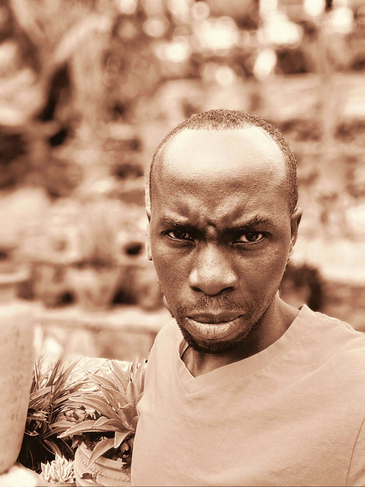
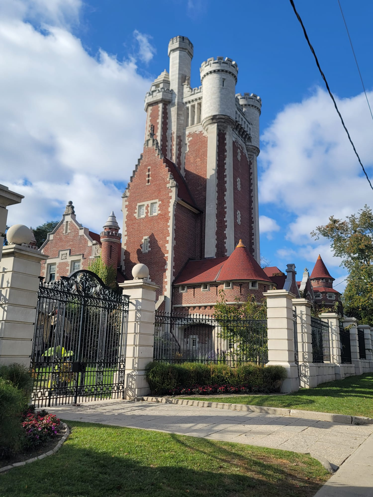
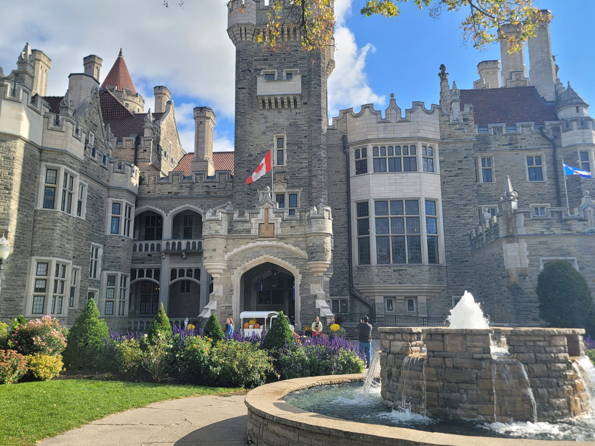
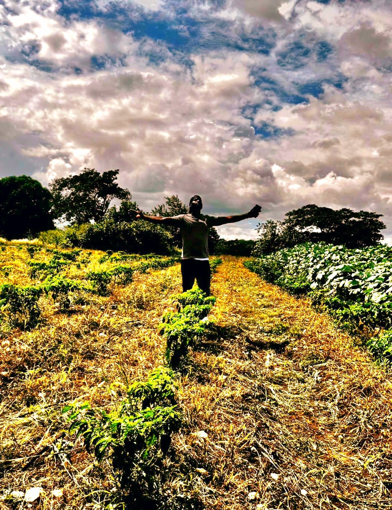
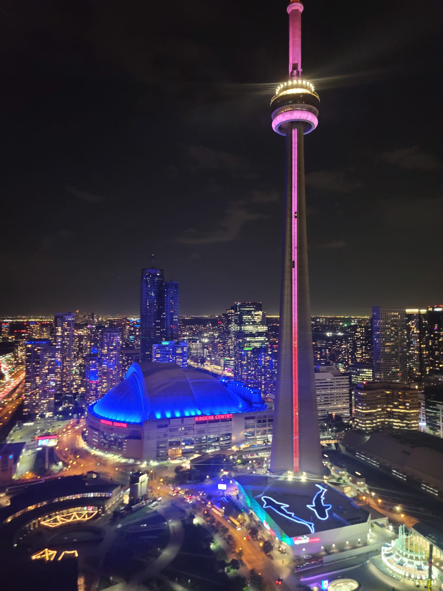
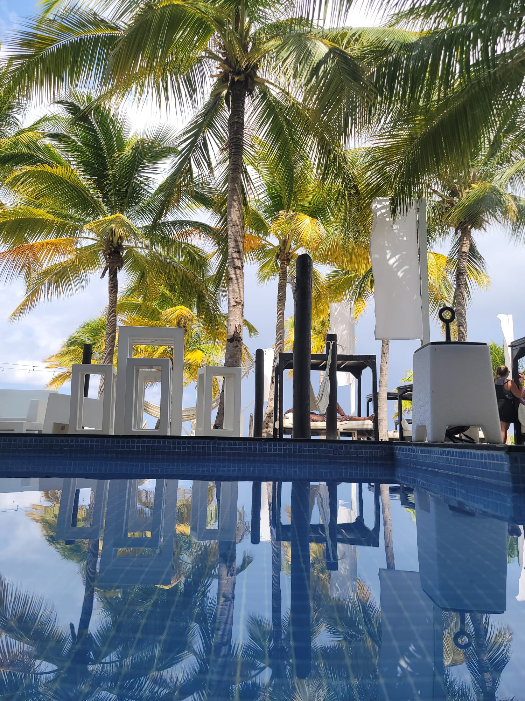

Welcome to our project on the impact of mechanical reproducibility in art. Explore the works inspired by Henri Pitch Robinson and Walter Benjamin's views on art and photography.
Rayon Barrett is a passionate photographer exploring the intersection of art and technology. My work is inspired by the rich history of photography and its evolving role in contemporary society. Through my lens, we aim to capture the essence of moments and challenge perceptions of reality.

Photograph is important in our lives because it reminds us of moments from our past and preserves memories for future generations
When a piece of art is reproduced multiple times, it raises the question of whether it retains its status as art or becomes something else entirely. According to Walter Benjamin, in his seminal essay "The Work of Art in the Age of Mechanical Reproduction," the unique presence of an artwork, what he calls its “aura,” diminishes with reproduction. Each reproduction strips away the contextual and historical significance that gives the original its authenticity. However, the reproduced artwork still holds artistic value as it allows for broader dissemination and accessibility, democratizing art consumption.
Mechanical reproducibility has transformed the way we interact with art. It has shifted the perception of art from a singular, sacred object to a more accessible, widely distributed medium. This transformation is crucial because it changes the role of art in society. Instead of being confined to private collections or elite circles, reproduced art can reach the masses, becoming a tool for education, political messaging, and social change.
The impact of mechanical reproducibility on society is profound. It has made art more democratic and accessible, breaking down barriers to appreciation and understanding. For example, photography and printmaking have enabled widespread visual literacy, where people can engage with artistic concepts and historical events without needing to see the original piece in person. It has also influenced how we perceive originality and authenticity, challenging the traditional boundaries between high art and popular culture.
As Benjamin suggested, while the mechanical reproduction of art may diminish its aura, it also gives it new life in different contexts, influencing and shaping societal values and perceptions in ways the original could not. This shift is especially relevant in our current digital age, where the reproduction and alteration of images are not just commonplace but fundamental to cultural production.
When a piece of art is reproduced multiple times, it raises questions about its authenticity and value. According to Walter Benjamin, in his essay "The Work of Art in the Age of Mechanical Reproduction," repeated reproduction diminishes the artwork's “aura,” or its unique presence in time and space. However, mechanical reproducibility is crucial because it allows art to be disseminated widely, making it accessible to a broader audience beyond its original location.
The impact on society has been significant. It democratizes art, allowing people from different backgrounds to engage with it. This broad accessibility has shifted the role of art from being an exclusive, elite experience to one that is integral to mass culture. Moreover, it has facilitated the spread of political and social messages, transforming art into a tool for change and communication.
Walter Benjamin's article argues that the mechanical reproduction of art—such as through photography and film—alters its nature and function. The reproduction process detaches the artwork from its historical context and unique aura, transforming it from a singular object of contemplation to one that can be used in various contexts. Benjamin suggests that this shift allows art to become more accessible and political, enabling it to serve revolutionary purposes by reaching and influencing the masses. However, it also challenges traditional notions of authenticity and originality in art.
Photography is both an art form in itself and a tool used by artists. It can stand alone as an expressive medium, capable of capturing and conveying complex emotions, narratives, and compositions. Photographers like Henry Peach Robinson used photography to create works that rivaled the fine arts in their complexity and beauty.
However, photography is also a tool that artists use to explore and document the world, express ideas, or supplement other art forms. Its ability to capture reality makes it unique, but it can also be manipulated and staged, blurring the line between reality and artifice. Thus, photography can be a standalone art form, a method of artistic documentation, or a tool for broader artistic expression.
Henry Peach Robinson created Fading Away in 1858, using a combination of multiple negatives to compose a single image. The photograph depicts a young woman on her deathbed, surrounded by grieving family members. Robinson's purpose was to elevate photography to the level of fine art by using it to portray deeply emotional and tragic subjects, similar to the themes found in literature and painting of the time.
The photograph was controversial because it depicted a fabricated scene of death, leading some to question the appropriateness of using photography to represent such somber themes. Robinson aimed to demonstrate that photography could convey complex narratives and emotions just as effectively as painting, thereby challenging the notion that photography was merely a tool for recording reality.
Digitalization has further revolutionized art by expanding the possibilities of creation, reproduction, and distribution. Unlike mechanical reproduction, digital images can be easily altered, shared, and experienced in virtual environments, often without any loss in quality. This has transformed how we interact with art, making it more interactive and immersive.
The internet and digital media have made it possible for artists to reach global audiences without relying on traditional galleries or publishers. Social media platforms allow for instant sharing and feedback, creating a new, decentralized art world where anyone can contribute and participate. This has not only made art more accessible but has also blurred the boundaries between creator and audience, leading to new forms of collaboration and co-creation.

Photo taken by: Rayon Barrett
Henry Peach Robinson (1830-1901) was a prominent photographer in the Pictorialist movement, which leaned toward artistic and expressive tendencies of the medium, informed by painting and other fine arts. The combination printing he developed, where elements of one image are combined from various negatives onto one print, constitutes Robinson's signature. This gave him the ability to have control and detail not achievable at that time with normal photography.
Here are some key characteristics of Henry Peach Robinson's work that you can look for in your image:
•Combination printing: As discussed previously, Robinson was one of the masters of combination printing. In the event that your image could be considered as a mixture of several photographs combined perfectly and seamlessly, this could represent his influence.
•Pictorialist aesthetics:* The typical aesthetic of Robinson would be marked by soft-focused images or atmospheric lighting conditions, taken carefully along with composition of subjects--thus, similar to paintings. Watch out for such features.
• Genre scenes: Robinson often depicted idyllic rural scenes, sentimental narratives, and allegorical subjects. Does your image present a similar theme?
• Attention to detail: Robinson was a very conscientious photographer, paying much attention to every aspect of the image. If your image presents much detail and good craftsmanship, it could be a sign of his influence.

Photo taken by: Emmanuel Nsengumukiza
• Straight Photography: This is a straightforward capture of the building and grounds. Robinson, however, was known for his elaborate combination printing, where he'd combine elements from multiple negatives to create a single image. This image appears to be a single exposure.
• Architectural Focus: Robinson was much more interested in *genre scenes and allegorical compositions often using human subjects in carefully constructed poses to tell a story or convey a message. Architecture wasn't his primary focus.
• Realism: The photograph is a realistic representation of Casa Loma. Robinson, however, was a pictorialist, by which photographers used techniques to create images that resembled paintings, and focused more on artistic expression than on strict realism.
In other words: This is a nice documentary photograph of a landmark, but it lacks the qualities of the work of Henry Peach Robinson:
• Combination printing: His signature technique of combining multiple images.
• Pictorialism: An aesthetic that prioritizes artistic interpretation over straight representation.
• Genre scenes and allegories: Thematic compositions often featuring people.
• Soft focus and painterly effects:*Created through manipulation in the darkroom.

Photo taken by: Emmanuel Nsengumukiza
The image depicts the model standing amidst a vibrant field under a dramatic sky, with a strong emphasis on light, shadow, and composition. This might echo aspects of Henry Peach Robinson's work, specifically his use of pictorial composition and his mastery of tonal contrast to create mood and tell a story.
Henry Peach Robinson is a very important 19th-century photographer who made many experiments in combination printing and creating photographs that mimic the works of Romantic paintings. Salient features of his works are as follows:
1. Dramatic Sky and Light: Robinson very often used skies with striking clouds to heighten the atmosphere, exactly as was done with your dynamic sky.
2. Romantic Idealism: His works often showed figures set amidst natural or pastoral surroundings, which symbolized man's harmony with nature—a theme captured in the pose and the setting of the figure here.
3. Composition: Robinson was known to painstakingly position his subjects for a balanced, painterly arrangement. In your picture, note how the lines of the flora draw the viewer's eye to the central figure—a device very much in keeping with Robinson's sensitivity to detail.
But while Robinson's work involved much elaborate combination printing and careful staging, this image has a spontaneity about it; it's more modern. The spirit of Romantic photography is certainly there, but with a modern twist.
Photo taken by: Rayon Barrett
Straight Photography: This is straightforward and a capture of building and grounds. Robinson was well-known for his elaborately combined printing, taking different elements from several negatives combined into one image. This here looks like a single exposure.
• Architectural Focus: Robinson was much more interested in *genre scenes and allegorical compositions often using human subjects in carefully constructed poses to tell a story or convey a message. Architecture wasn't his primary focus.
• Realism: The photograph is a realistic representation of Casa Loma. Robinson, however, was a pictorialist, by which photographers used techniques to create images that resembled paintings, and focused more on artistic expression than on strict realism.
In other words: This is a nice documentary photograph of a landmark, but it lacks the qualities of the work of Henry Peach Robinson:
• Combination printing: His signature technique of combining multiple images.
• Pictorialism: An aesthetic that favors the hand of the artist over direct representation.
• Genre scenes and allegories: Thematic compositions often featuring people.
• Soft focus and painterly effects:*Created through manipulation in the darkroom.

Photo taken by: Rayon Barrett
The photo has a night-time shot of an illuminated city-scape, with the bright-looking tower, which may well be the CN Tower. With all those vibrant lights across this cityscape, there's nothing that has an important impact on Henry Peach Robinson's work.
In contrast:
1. Urban Modernity vs. Romanticism: The work of Robinson deals with rural or idyllic sceneries while this image shows an urban, modern environment with a focus on architecture and technology.
2. Natural Light vs. Artificial Light: Robinson's work is based on natural lighting to create mood and drama in his works, while this image utilizes artificial lighting from the city structures to draw the viewer's attention.
3. Realism vs. Idealized Scenes: The scenes of Robinson were contrived to be idealized and narrative in nature, while this image is more documentary in capturing the vibrant energy of a contemporary cityscape.
While both Robinson's work and this image demonstrate an understanding of composition and dramatic light, the urban, technological, and modern elements of this photo differ significantly from Robinson's romanticized, nature-centric aesthetic.

Photo taken by: Rayon Barrett
This is a very peaceful shot showing palm trees reflected in the pool, which gives off the impression of tranquility and balance. Visually interesting, but it lacks any strong connection to the work of Henry Peach Robinson.
Contrasts with Robinson's Style:
1. Focus on Idyllic Nature: Robinson's work often featured staged, romanticized rural or pastoral scenes. While this image captures a natural setting, it leans toward a modern, leisure-focused aesthetic rather than the narrative-driven, romantic qualities typical of Robinson.
2. Use of Reflections: The reflective pool in this image creates a symmetrical, almost abstract visual, emphasizing modern photographic techniques. Robinson rarely incorporated such abstract elements, favoring straightforward, painterly compositions.
3. Staging and Symbolism Robinson was a master at staging his subjects to tell deeper stories or allegories. This image, while harmonious, seems to capture a moment of quiet rather than being staged for symbolic or storytelling purposes.
Similarities to Robinson's Work:
• Attention to Composition: Similar to Robinson, this photo shows balance and composition, with reflection adding to the effect of the vertical lines of the palm trees.
• Mood and Atmosphere: The atmosphere is peaceful, as it was in the mood Robinson tried to achieve in his works, but here through modern means.
While the image shares some of the aesthetic qualities of Robinson's approach to harmony and mood, its modern context and leisure focus are far removed from his Romantic, narrative-driven photography.